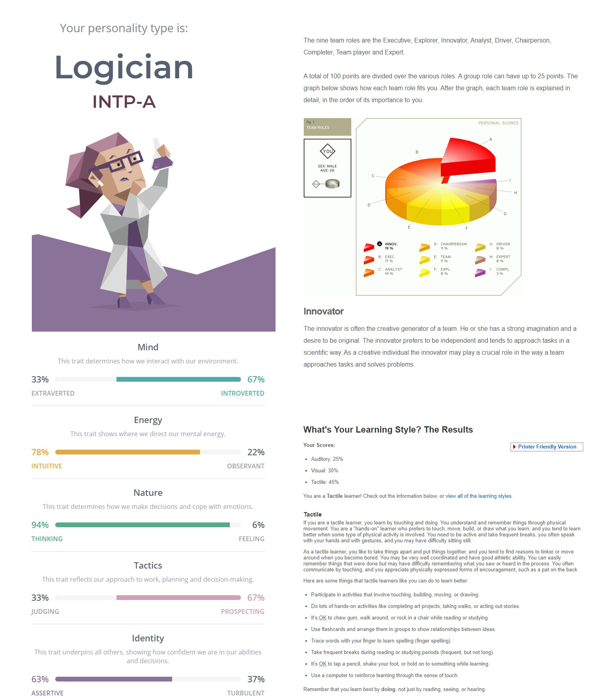

Hamilton Hunter Profile
Name: Hamilton Hunter
Student number: s3878833
Email address: s3878833@student.rmit.edu.au
Nationality: Australian
Languages spoken: English
About me
I grew up in the West Australian coastal town of Geraldton, located about 450km North of the states capital Perth in which I currently reside, Geraldton is best know for its beaches, surf, fishing and laid back life style, all things I cherished growing up. My working background does not have much to do with IT after spending 7 years in the construction industry as a bricklayer obtaining my trade qualification, before that however I was undertaking a trainee-ship in store management which did involve a small amount of IT work, That included, stock intake management, using the security systems and monitoring the cooling systems. My hobbies contrast a fair bit but because of that I feel I can find a good balance between keeping mentally and physically fit. They include; archery/hunting, camping, sports but mostly AFL (go Freo), Gaming, reading (currently reading Extreme Ownership by Jocko Willink), art and other various crafts like carpentry and metal work.
Interests in I.T
My interests in the field of I.T are mostly to do with Cybersecurity, artificial intelligence, machine learning and robotics. All these fields I believe will grow in importance in the near future, its undeniable that A.I and robotics will become increasingly involved in peoples lives for better or for worse and with that comes the need for Cybersecurity. Not only am I fascinated by these individual technologies but also in the rise of I.T in general and how technology today is shaping our future. It is for this reason I have decided to educate myself in I.T, in the hope of one day working in the Cybersecurity field.
My Ideal Job
As of today my ideal job in life is a job in the Cybersecurity field, it is still early in my studies and I am fairly new to the I.T world but so far from what I have read and researched about a Cybersecurity expert it seems to appeal to me. Alternatively, I have always wanted to move out of the city somewhere rural so having an I.T background may one day help me with that possibility.
Personality Profile
As apart of my assessment one requirements I have taken three tests to build upon my personal profile, here are my results;
Overall I believe the outcomes of my test results are fairly accurate, ill start with the Myer Briggs test which resulted in the personality type ‘logician’, the nature, tactics and identity score I think is accurate but the mind and energy score are probably off a small amount, I believe I am more than 67% introverted and would probably put that around 75% - 80%, as for the energy score I would probably put intuitive at around 70%-65% and raise observant the difference.
The last two tests are the Learning Styles test and the Team roles test, I think the learning styles test is accurate, I find it difficult to take in information unless I’m hands on and can actively be involved and the Team Roles test is also mostly accurate with my suggest role in a group being an innovator and also preferring to work independently.